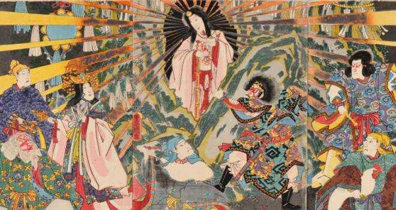
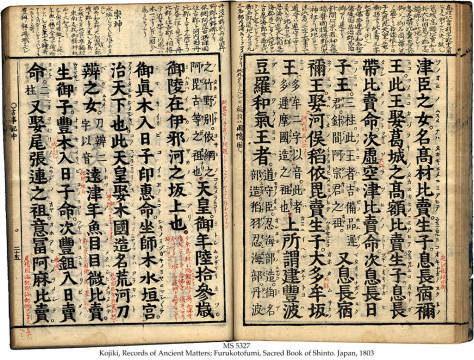

A origem do “Xintoismo” .
A mitologia japonesa tem uma história que remonta mais de 2.000 anos. Essa mitologia inclui um grande número de divindades, sendo deuses, deusas e espíritos, cujas histórias dizem respeito à criação do mundo, à fundação das ilhas do Japão e às atividades de divindades, seres humanos, animais e criaturas mágicas. Também conhecida como Xintoísmo (onde a palavra Shinto significa "caminho dos deuses") é considerada a espiritualidade tradicional do Japão, considerado também uma religião por estudiosos ocidentais. A crença foi iniciada no período Jamon (entre 8000 a.C. á 300 a.C), período que foi marcado pela expansão do ideal de filosofia de vida entre a harmonia entre as montanhas, rios, ventos, árvores e outros elementos da natureza e o homem.
Esta religião, desprovida de filosofia e de rituais complexos, é baseada na apreciação das maravilhas e belezas da natureza, cuja esta antiga crença diz e prática o respeito às forças naturais, que são consideradas espíritas e chamadas de kami. Tudo na natureza tem um kami, ou seja, uma divindade ou espírito que habita aquele corpo. E além de deuses, o termo kami também pode ser usado para descrever os espíritos de entes queridos falecidos ou espíritos animais. Como resultado, o panteão japonês é enorme, onde segundo a mitologia, existem mais de oito milhões de kami (número tradicionalmente usado para expressar o infinito no Japão).
Registros escritos da mitologia japonesa.
As práticas xintoístas foram registradas e codificadas pela primeira vez nos registros escritos históricos do Kojiki e Nihon Shoki, nos séculos VII e VIII. Ainda assim, estes primeiros escritos japoneses não se referem a uma religião xintoísta unificada, mas a práticas ritualísticas associadas com as colheitas e outros eventos praticadas pelas tribos relacionados às estações do ano, aliadas a mitologia unicamente japonesa, que combina tradições espirituais dos clãs ascendentes do Japão arcaico, principalmente as culturas dos Yamato e dos Izumo.
Kojiki (ou Furukotofumi) é o livro mais antigo sobre a história do Japão antigo, ele foi apresentado pelo burocrata Ō no Yasumaro à então Imperatriz Gemmei no ano de 712. Este livro foi baseado em eventos que tinham sido memorizados de um livro anterior, o Kujiki, e também baseados nas histórias que passaram de geração em geração, mantendo também os contos e explicações tradicionais da mitologia japonesa Já o Nihon Shoki, às vezes traduzido como "crônicas do Japão", é o segundo livro mais antigo sobre a história do Japão. Este livro inicia com lendas mitológicas, mas continua com o relato de eventos históricos do século VIII, onde há uma interlocução entre acontecimentos reais e as crenças xintoístas. O Nihon Shoki foi compilado sob ordem do príncipe Toneri no Miko (filho do Imperador Temmu) e foi apresentado formalmente à Imperatriz Gensho no ano de 720, onde foi parcialmente escrito em versos nem sempre regulares.
A mitologia desempenha um papel importante na vida do povo japonês não só antigamente mas também hoje em dia. Mitos e lendas são à base de muita arte, drama e literatura japoneses, e as pessoas ainda aprendem e contam histórias sobre os deuses e deusas.
A arte japonesa no contexto mitológico
Ukiyo-e (traduzido como "retratos do mundo flutuante") é um gênero de xilogravura e pintura que prosperou no Japão entre os séculos XVII e XIX. Se popularizou no periodo Edo onde as mais populares temáticas abordadas são a beleza feminina, o teatro kabuki, os lutadores de sumô, cenas históricas, contos e lendas, paisagens, fauna e flora, e até pornografia. No século IX, o Japão começou a abandonar a influência chinesa e a desenvolver formas de expressão próprias; de forma gradual, foi ganhando importância a arte profana, que continuou florescendo, junto à religiosa, até o fim do século XV.

Nota: Katsushika Hokusai é o artista por trás dessa obra e autor da série de xilogravuras "Trinta e seis vistas do monte Fuji" da qual essa xilogravura faz parte.
A literatura juntamente com as diversa formas de arte tiveram papel fundamental na transmissão da mitologia japonesa, representando suas lendas e os seres que as compõem, muita vezes usando dessas crenças para contar e ilustrar eventos reais (como tsunamis, furacões e até guerras). Um grande exemplo dessa forte é presença é que de acordo com as crenças xintoístas, a principal divindade era Amaterasu – a deusa do sol. Acreditava-se que a deusa do sol era a protetora da nação japonesa e até hoje, o Japão é conhecido como a "Terra do Sol Nascente" e sua bandeira, um círculo vermelho num fundo branco, é a imagem que representa esta crença.